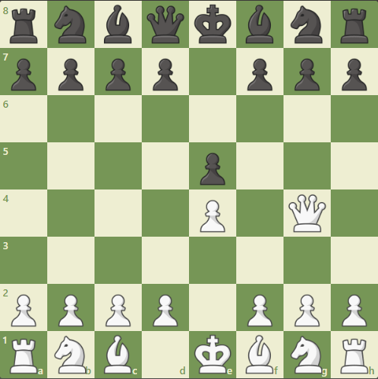
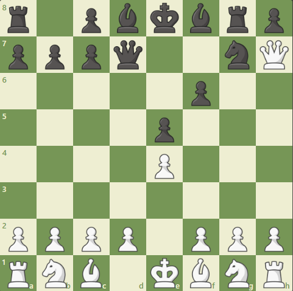

Gameplay
Strategy
Since spinchess is almost the same as regular chess, strategies in this game don't differ much from strategies in your average chess match. However, some have tricks up their sleeve that make the most out of the 'spinning' feature.
Here's a few strategies for beginners:
Develop pieces like a normal chess game, and with the added benefit of 'spinning', use your pieces' positions to take advantage of your opponent.
- Queens are very powerful, do not lose them in the early and mid games. If you plan to develop your queen early game, make sure it doesn't get trapped, pinned, or forked by the enemy pieces, as sometimes even 'spinning' can not help you in these situations.
- Rooks can be developed on the second turn (spinning the left rook clockwise or the right rook counter-clockwise), but generally isn't advised, due to the knight and pawn being put at the back rows, taking them one extra turn to be developed.
- Knights are special given their ability to jump over pieces, when combined with strategic 'spinning', they can prove to be powerful pieces, so try to develop them early game and do not lose these pieces early.
- Bishops are normally restricted to one color. However, in spinchess, they can switch to the other color after their turn, allowing for even a single bishop to be useful.
- Pawns are also given an advantage with 'spinning', as this can prevent double pawns (two pawns on one file) and allows pawns to travel diagonally along the board (though one square at a time). Make sure to protect your pieces carefully, as just a single pawn cannot protect your piece against an opponent, as 'spinning' allows said piece to move away from the direct line of attack of your own pieces, and may even block your or their pieces against you.
An Example of a Game of Spinchess
1 / 16
Starting Point
2 / 16

White's Turn: e4
3 / 16
Black's Turn: e5
4 / 16

White's Turn: Qg4
5 / 16
Black's Turn: f6
6 / 16
White's Turn: QxgL
7 / 16

Black's Turn: 14R
8 / 16
White's Turn: Qxg8
9 / 16
Black's Turn: h7L
10 / 16
White's Turn: Qxh8
11 / 16
Black's Turn: Be7
12 / 16
White's Turn: Bb5
13 / 16
Black's Turn: c6
14 / 16
White's Turn: Nc3
15 / 16
Black's Turn: Qd8R
16 / 16
White's Turn: Qh5#